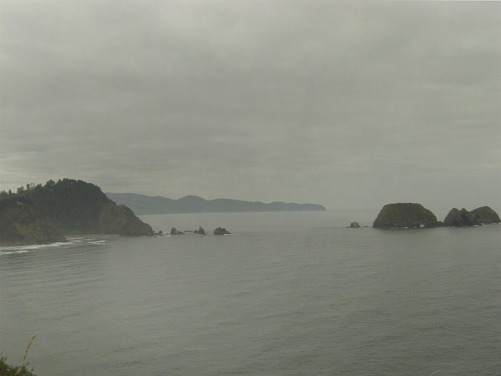

浮き葉と花
カフェ / 新潟県新潟市西区
Lily
新潟県新潟市西区にあるカフェ「cafe Lily」のご案内ページです。営業時間やメニューなど、詳しいことは準備中。まずはお電話かInstagramをご覧ください。


制作側の連想
「Lily」から浮かんだ、池の葉
店名の由来は分かりません。制作側は「Lily」という響きから、水に浮かぶ睡蓮(リリーパッド)の丸い葉を連想し、このサイトを「池の水面」に見立てました。ページは水面に浮かぶ丸い葉、写真は葉の上にのせた一枚、という作りです。制作側の連想で、お店の理念・由来とは無関係です。
水面と水中
水の上の三枚、水の下の三枚。
写真は新潟市の風景ではありません。イメージで選んだ、国外・撮影地不明のフリー素材です。
水面
国外のイメージ(インドネシア) 
撮影地不明のイメージ 
国外のイメージ(オランダ)
水中国外のイメージ(米国) 
国外のイメージ(スウェーデン) 
国外のイメージ(米国)

ご案内
お店のこと(確認できたものだけ)
| 所在地 | 〒950-1106 新潟県新潟市西区ときめき西３丁目１−７ |
|---|---|
| 電話 | 025-379-6263 |
| 営業時間 | 準備中 |
| 定休日 | 準備中 |
| ご予約 | 準備中 |
| 駐車場 | 準備中 |
| SNS | Instagram @cafe_lily_t |